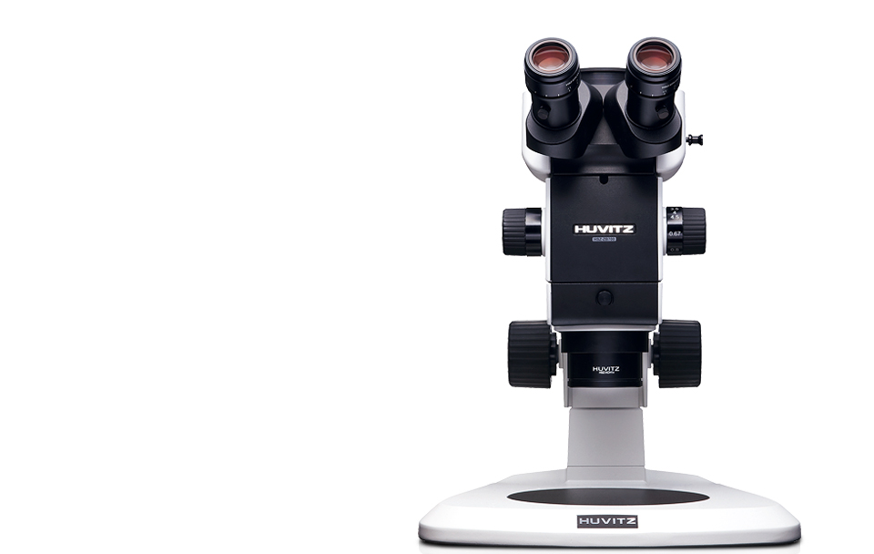
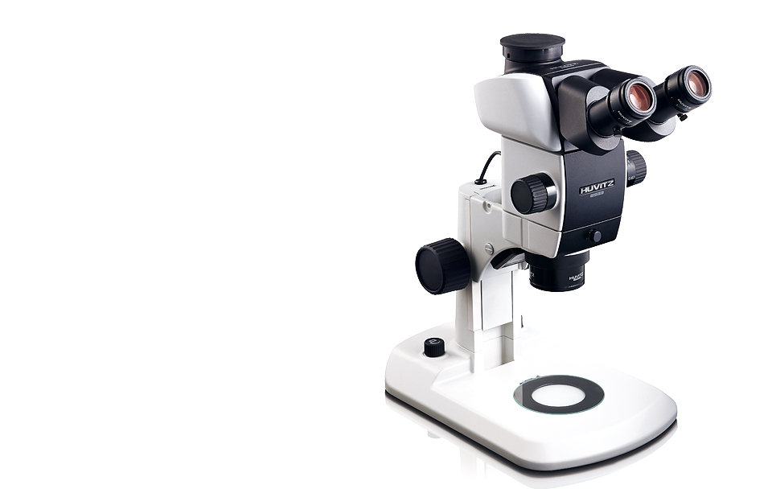
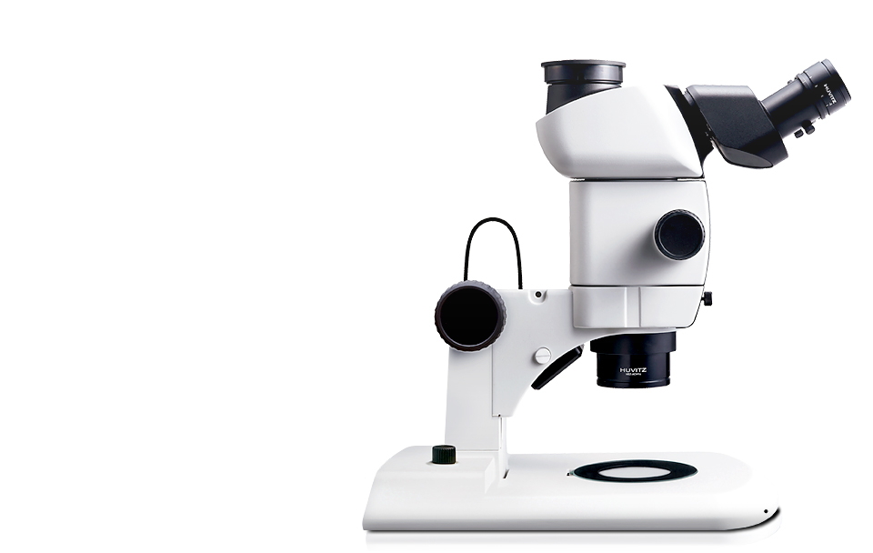

HSZ-700 Series
Object Lens 교환 및 액세서리 장착까지 용이하여 고도의 효율성을 요구하는
환경에서 시각적 효과를 극대화할뿐 아니라 활용도가 더욱 높아집니다.
최적화된 줌 및 색상 재현 기능으로 안정적이고 높은 품질의 이미지를 제공합니다.
- 
- 
- 


제품소개
- Galilean 광학계
- 평행하게 배열된 두 개의 광학적 시스템이 하나의 대물렌즈에 의해 입체 각도가 형성되며 이미지를 보다 정확하게 재현합니다.
- 최적의 줌배율
- 7:1 동급 최고의 줌 비율설계로 기본 줌 배율 8X~56X까지 지원하여 보다 넓은 범위의 배율영역을 사용할 수 있습니다.
- Click-Stop 기능
- 정확한 배율을 쉽게 찾을 수 있도록 10단계의 Click-Stop 기능이 추가되어, 측정시 오차의 범위를 최소화 할 수 있습니다.
- 다양한 비디오포트
-
다양한 Digital Camera의 요구를 충족시키기 위하여 Digital 이미지품질을 보증할 수 있는 Video Port를 장착하였습니다.
(HSZ-730TR 모델에 한함)
- 뛰어난 광학성능
-
선명한 이미지를 재현하는 고해상의 Optical 설계와 뛰어난 해상력의 고성능의 렌즈설계로 왜곡과 여러 수차(Aberration)를
최소화 하였습니다.
- Built-in LED조명
- 기본 장착된 LED조명은 균일한 색온도 및 밝기가 최적화된 조명과 스탠드를 일체화 하였습니다.(HSZ-ILST7)
- 4분할 LED Ring Light
- 4분할 LED조명은 다양한 이미지가 가능하며 Sample의 Highlight를 사용자가 조절할 수 있으므로 능동적인 조명사용이 가능합니다.
제품사양
| Item | Specifications | |||
|---|---|---|---|---|
| Zoom microscope body HSZ-ZB700 |
|
|||
| Observation tube HSZ-TR30 HSZ-BI30 |
|
|||
| Stand | HSZ-ST7 | HSZ-ILSTS7 | HSZ-ILST7 | |
| HSZ-ST7 | Standard large stand | LED reflected / transmitted illumination stand |
LED reflected / transmitted illumination large stand |
|
| HSZ-ILST7 | Frame installation | Mounting diameter : 76mm | ||
| HSZ-ILSTL7 | Focusting adjustment | Knob rotation tension adjustment Focusing storoke : 120mm | ||
| Stage plate |
|
|
|
|
| Light source |
|
|||
| Objective lens |
|
|
||
| Eyepieces | Eyepiece series | |||
| Weight | ||||